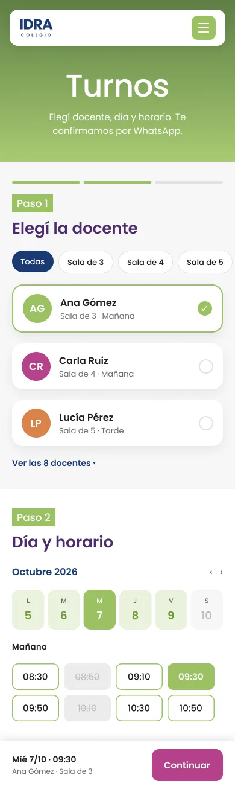
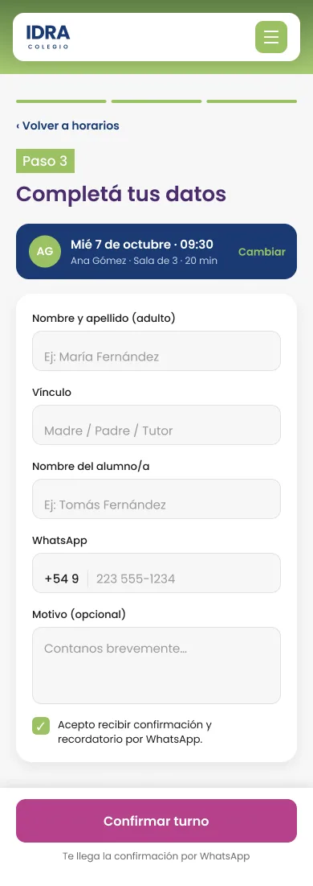
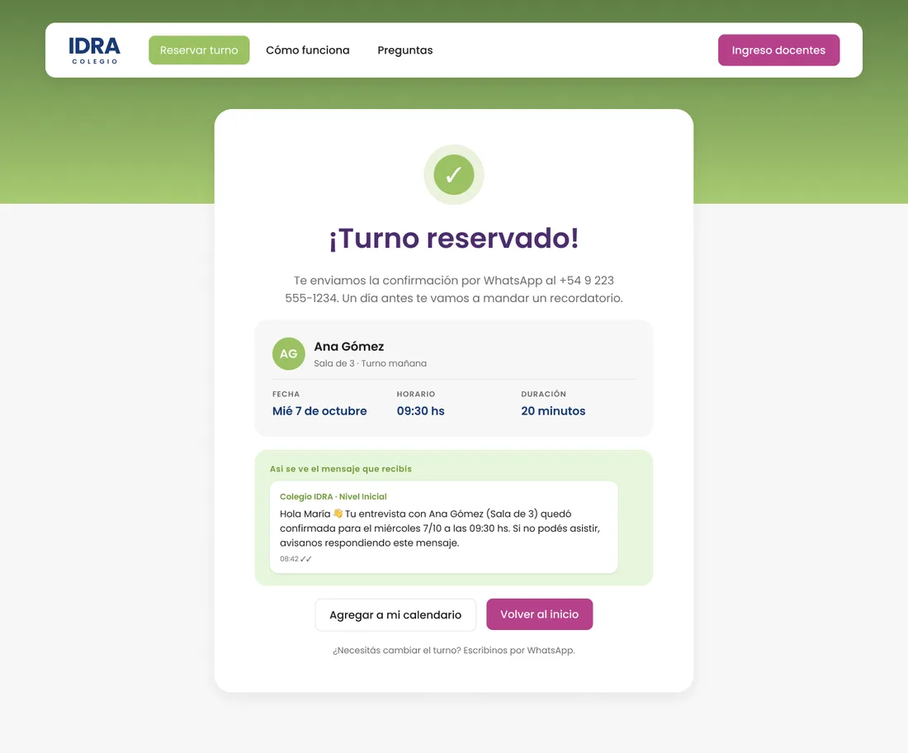
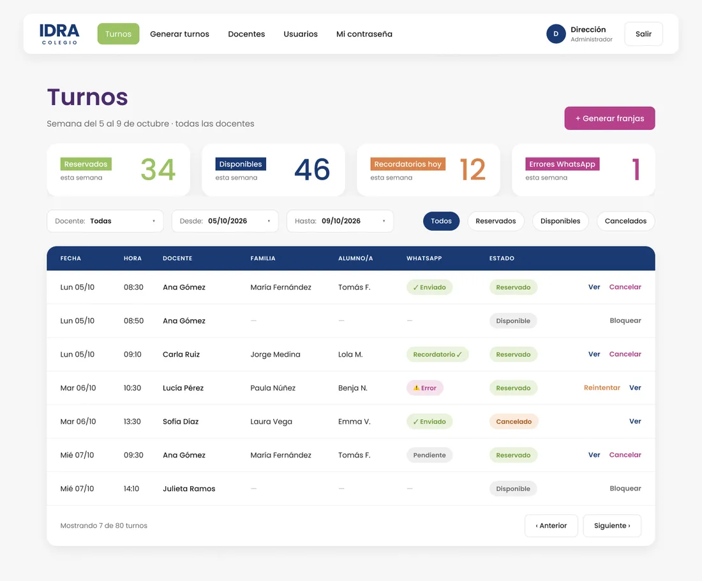
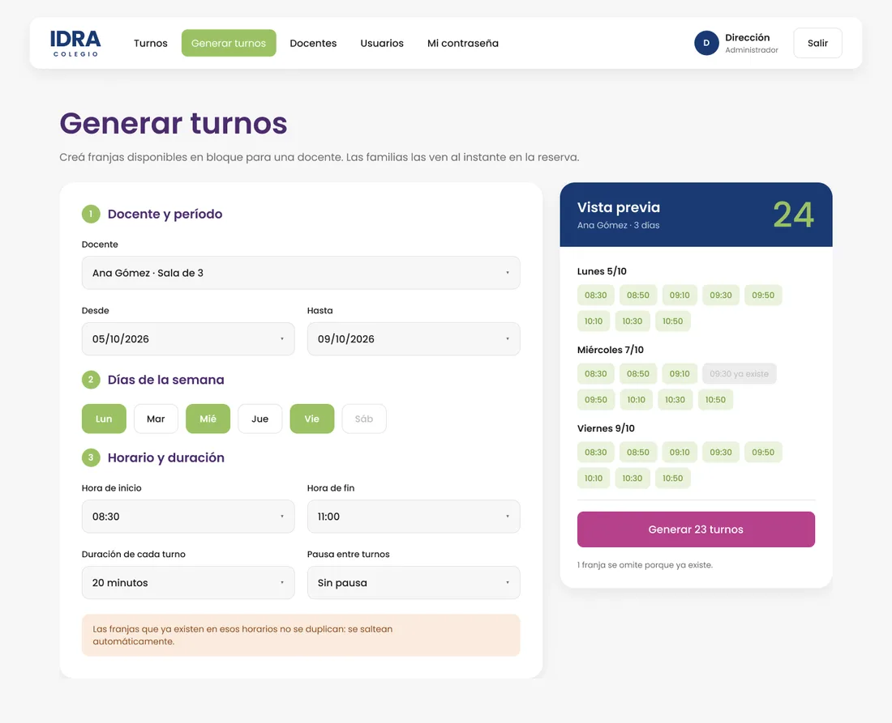
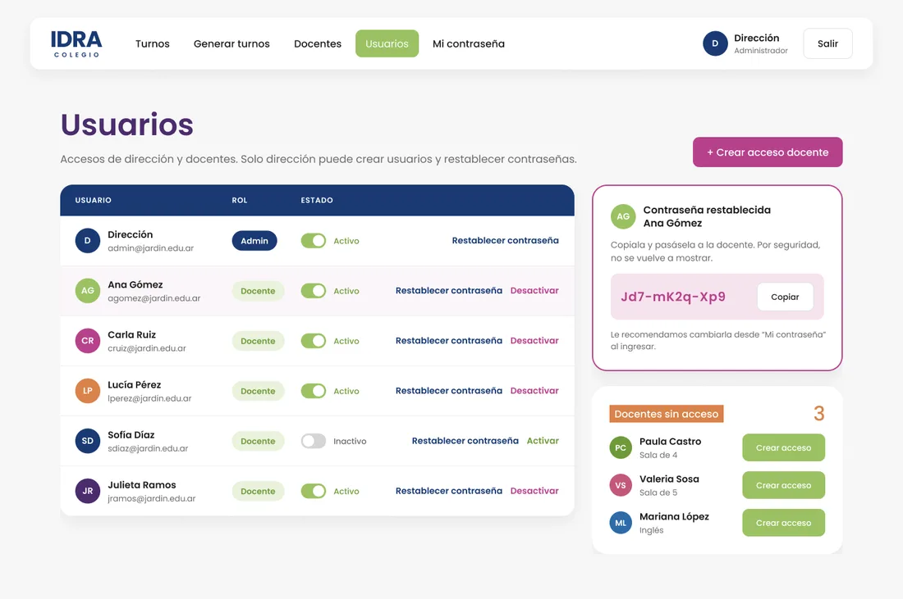

Tus clientes reservan solos. Vos atendés.
Turnera es el sistema de turnos online que confirma y recuerda cada cita por Email y WhatsApp. Menos mensajes, menos ausencias y la agenda siempre completa.

Turnera es el sistema de turnos online que confirma y recuerda cada cita por Email y WhatsApp. Menos mensajes, menos ausencias y la agenda siempre completa.
Si todavía coordinás por mensajes, llamadas o un cuaderno, seguro te pasa esto.
Responder consultas de horarios te interrumpe el trabajo y se come tus noches.
Cada ausencia es un horario perdido que no se puede volver a vender.
Dobles reservas, cambios mal anotados y clientes que llegan cuando no corresponde.
Pensado para que lo use cualquier persona, sin capacitación ni instalar nada.
Tus clientes eligen día y horario desde el celular
Confirmación y recordatorio automático por WhatsApp, el canal que ya miran.
Se acabó el ir y venir coordinando horarios. La agenda se completa sola.
Cada profesional con sus horarios, sin superposiciones y con todo en un panel.
Accesos por rol: cada persona ve y hace solo lo que le corresponde.
Generás tus horarios en bloque, compartís el link y listo.
Las pantallas reales del sistema, desde que tu cliente reserva hasta que gestionás la agenda.
Tu cliente elige profesional, día y horario, completa sus datos y listo.


Apenas reserva, el cliente recibe un Email con los datos del turno. Un día antes, otro recordatorio por WhatsApp.

Mirá la semana completa y el estado de cada turno y de cada aviso, sin abrir una planilla.

Elegí profesional, período, días y duración: Turnera crea todos los turnos de una vez.

Creá un usuario para cada integrante y decidí quién puede qué.

Las capturas muestran un ejemplo con datos de prueba. Turnera se adapta al nombre, los colores y los profesionales de tu negocio.
Del alta a tu primer turno en un mismo día.
Cargá profesionales, días y duración de cada turno.
Tus clientes reservan desde cualquier dispositivo, sin crear cuentas.
Confirmaciones y recordatorios salen solos por Email.
Sin permanencia. Cambiá de plan o date de baja cuando quieras.
Precios en dólares. Probá Turnera sin costo antes de decidir.
Lo que más nos preguntan los negocios antes de empezar.
Para cualquier negocio que trabaje con turnos: consultorios, peluquerías, estudios, talleres, colegios y jardines maternales.
No. Reservan desde el navegador y reciben todo por Email.
Lo ves marcado en el panel y podés reintentar el envío con un clic.
Sí, pedila abajo y te mostramos cómo quedaría con tu negocio.
Dejanos tu email y te mostramos Turnera funcionando con los horarios de tu negocio.